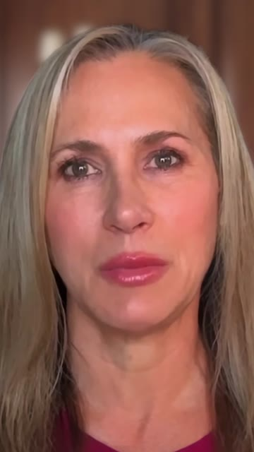
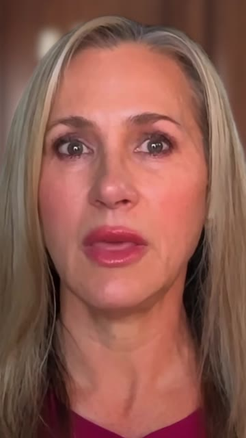
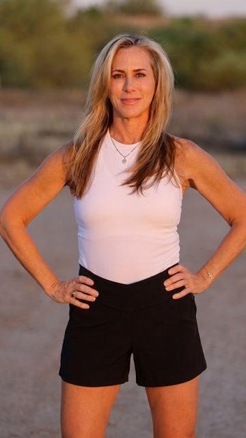
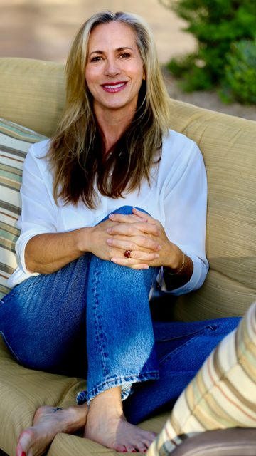
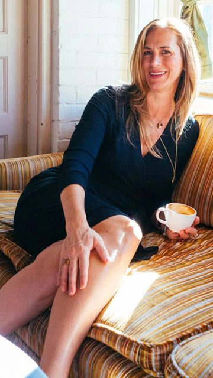
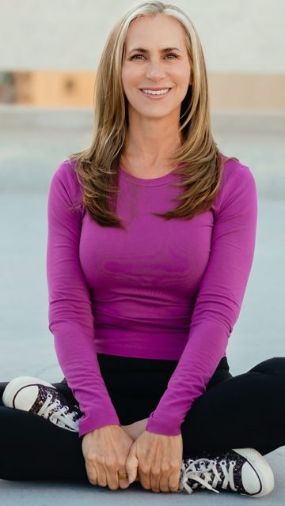
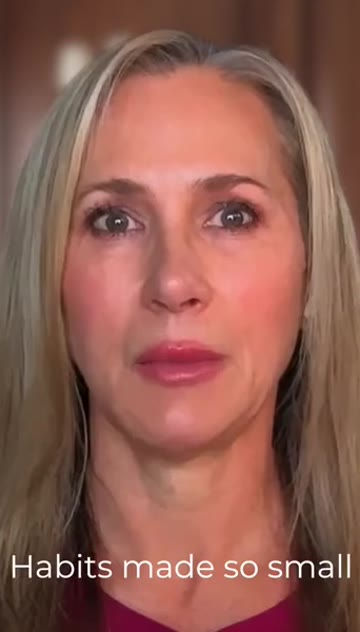

Julie Gibson Clark masterclass: three 9:16 Reels concepts
15 to 20 second Reels, sound on, calm premium pacing, real footage of Julie only. No AI images of Julie.
Facts: live on Zoom, 60 minutes, $49, October 27 at 7 PM ET.
1. The Slow Clock
(no people)
Hook. Macro shot of a brass clock’s second hand, filmed so it ticks slower and slower. Sound: a loud, close tick that stretches out.

1.5 to 6sThe tick lands on Julie (real studio footage), with a slow push in. On screen: The longevity masterclass of the year.

6 to 12sA second real take holding eye contact. On screen: Learn to age slower from the world’s second slowest ager.

12 to 17sDissolve to her desert golden hour photo with a slow drift. On screen: Live on Zoom. 60 minutes. $49.
October 27, 7 PM ET.

17 to 20sEnd frame: warm portrait and the LLA logo. The last tick fades out.
Assets: Julie studio talking head: Drive SOURCE_RAW_Julie_MAIN_camera.mp4 (clean, no burned captions) plus julie-film-1080p.mp4 for reference. Photos: julie-standing-hd.jpg, julie-jeans.jpg. Clock macro: Higgsfield (H1).
Feasibility: Feasible. It needs 2 Higgsfield shots (H1, H2).
2. One Long Golden Day
Hook. Her sunlit close-up smile, starting already in motion with a slow zoom. On screen: The longevity masterclass of the year.

1.5 to 5sMorning: coffee by the window, with a gentle pan.

5 to 9sMidday: movement, seated on the ground, with a calm push.
Sunset: standing in desert light, after a 2 second Higgsfield dawn walking path insert (H3) and a Pilates mat texture with hands (H4). On screen: Learn to age slower from the world’s second slowest ager.
She speaks to camera (real footage). On screen: Live on Zoom. 60 minutes. $49.
October 27, 7 PM ET.
Assets: Photos from the landing page instructors folder: julie-sun, julie-coffee, julie-purple, julie-standing-hd. Julie studio footage from Drive.
Feasibility: Feasible today with assets we have. The risk is that it is mostly stills, so the parallax must be subtle.
3. A Seat in Her Living Room
(no people)
Hook. Dusk, a warm lamp, a lamp lit living room, hands opening a laptop with the face out of frame (Higgsfield H6). Sound: the lid clicks open.
The screen fills the frame with Julie mid sentence (real footage). On screen: The longevity masterclass of the year.

7 to 13sA wider real take of Julie. On screen: Learn to age slower from the world’s second slowest ager.
(no people)
Steam rising from tea beside the laptop, in warm lamp light (Higgsfield H7). On screen: Live on Zoom. 60 minutes. $49.
October 27, 7 PM ET.
Assets: Julie studio footage from Drive or julie-wide.mp4. Room, hands and tea shots: Higgsfield H6 and H7 (no faces).
Feasibility: Feasible. It needs 2 Higgsfield shots, and the screen composite is simple.
Asset inventory (real Julie only)
| Raw studio video | Drive: SOURCE_RAW_Julie_MAIN_camera.mp4 (0.97 GB), SOURCE_RAW_Julie_SECOND_camera.mp4 (2.4 GB), riverside raw 0008, Julie.mov (0.8 GB). Clean talking head, the best source. |
| Edited Julie videos | Landing page: julie-film-1080p.mp4 (139s, 16:9), julie-wide.mp4 (90s), julie-original.mp4 (9:16, 90s), JULIE_90S_V25.mp4. Drive: Julie 90s V2.mov, FINAL JULIE_65s 9:16 (Ad#12). These have burned-in captions and graphics, so use them for reference only. |
| Photos | Landing page /julie-masterclass/assets/instructors/: julie-jeans, julie-standing-hd, julie-sun, julie-coffee, julie-purple, julie-goldenhour, julie-portrait (1100 to 2400 px). |
| Not Julie | Ad#17 “Five habits” and Ad#19/20 are UGC videos of another woman. The landing page hero mp4 is stock. Higgsfield (approved) is used only for B-roll without Julie. |
Planned Higgsfield shots (B-roll only, no Julie)
| H1 | Concept 1: macro of a brass clock second hand in warm side light, 9:16, 5s |
| H2 | Concept 1: dust motes drifting slowly in a window light beam, 5s |
| H3 | Concept 2: an empty coastal walking path at dawn with low mist and a slow dolly, 5s |
| H4 | Concept 2: close up of hands on a Pilates reformer strap, natural light, 5s |
| H5 | Concept 2: linen curtain moving in an evening breeze, 5s |
| H6 | Concept 3: hands opening a laptop in a lamp lit living room, face not shown, 5s |
| H7 | Concept 3: steam rising from a tea cup beside a laptop, 5s |
Model: Kling 3.0 (9:16, 1080p) or the top cinematic model available on the account. Credit cost: the API listing exposes no prices. We will get an exact quote for all 7 shots with prepare_generation before generating. Nothing has been generated yet.
Recommended: Concept 1, The Slow Clock.